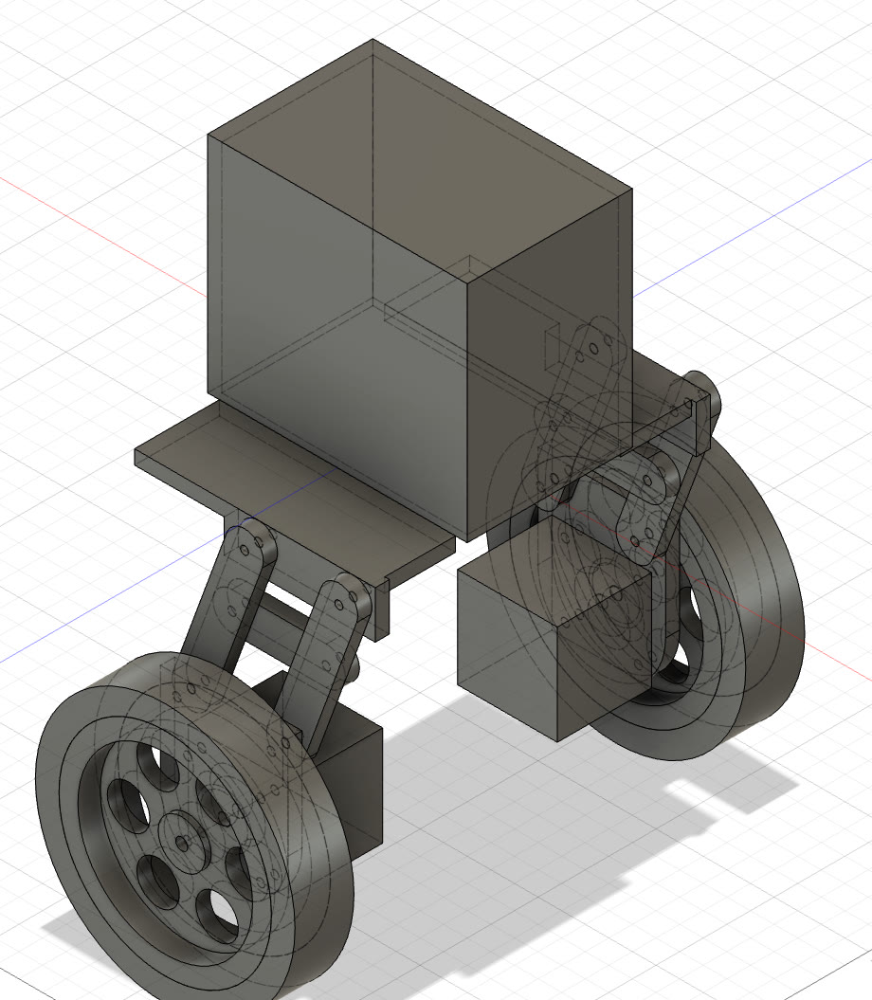

A two-wheeled self-balancing robot that gets back up on its own.
Built end to end, in the open — from the first CAD sketch to a policy running on real hardware.
A robot should ship as a simulatable, identified asset — not as a pile of parts and a binary.
Zingu is an inverted-pendulum robot built around an ESP32. It holds itself upright with a cascaded PID controller, and when it falls over — because it always eventually does — it detects the fall, waits for the chassis to settle, and performs a wheel-torque kick-up to swing itself back into the balance envelope.
I want this to be a project a beginner can actually start from, and finish. Most robot repositories hand you the firmware and leave the other 90% as an exercise. Every version of Zingu is open source all the way down:
The project grows one robot version at a time. Each version is a complete robot with its own key feature — and, for the parts worth learning in simulation before touching hardware, its own sim-to-real story. Today that is a self-balancing robot. Next it gets legs, then a camera and the perception to use it.
I chose balance and self-recovery to start on purpose. It is about the smallest robot that still forces you through the entire real-to-sim-to-real loop: an unstable system where a hand-tuned controller runs out of road and a learned policy has something to prove — and a build you can finish on a desk. Everything after this is the same loop with more degrees of freedom.
The longer arc is an outdoor companion — the robot-dog idea on two wheels, smarter, and open to whatever task I can imagine giving it. Zingu Brain, the perception and decision side, comes next.
Each version is one robot, one new capability, and every file needed to build it.
A rigid chassis bolted straight to two wheels — the shortest path to a balancing robot. It holds itself upright with a cascaded PID controller, and when it falls it detects the fall, waits for the chassis to settle, and kicks itself back up with wheel torque.

v0.2.0 puts a leg between the chassis and each wheel.
The point is not the mechanism for its own sake: more degrees of freedom is exactly where a hand-tuned PID stops being enough and a learned policy starts to earn its keep.
Angle estimation from the IMU feeds an inner torque loop and an outer position loop. The state machine is what makes the robot recoverable rather than fragile: a fall is a transition, not a crash.
A camera, and the decision side that uses it. Where the robot stops reacting and starts choosing.